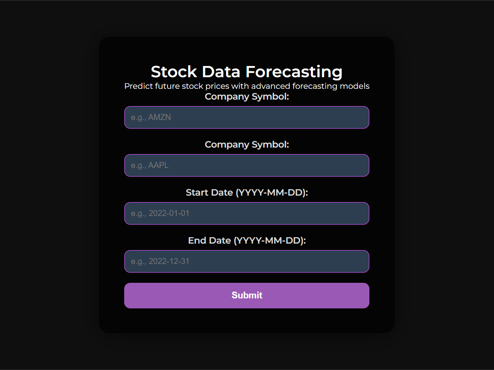
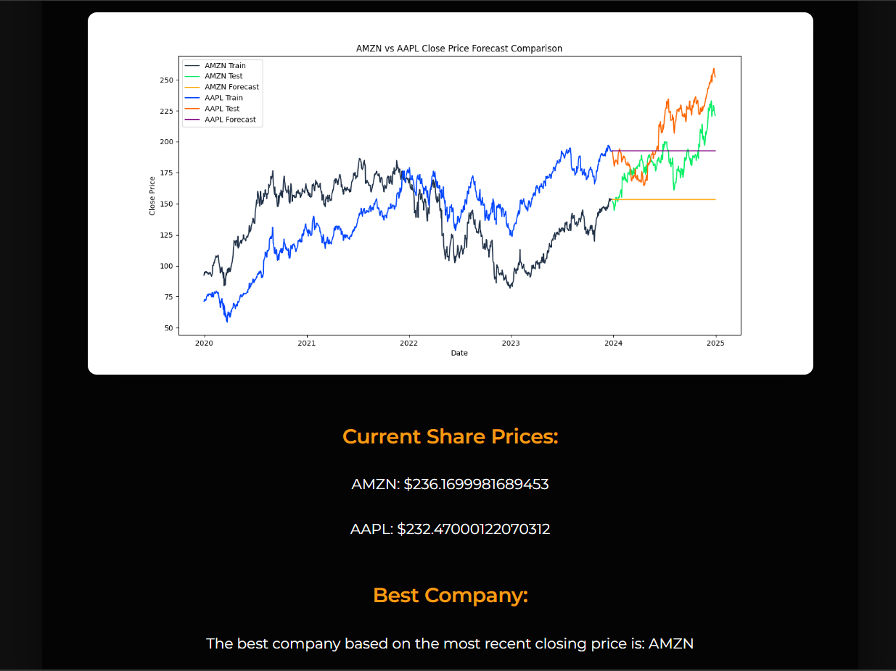
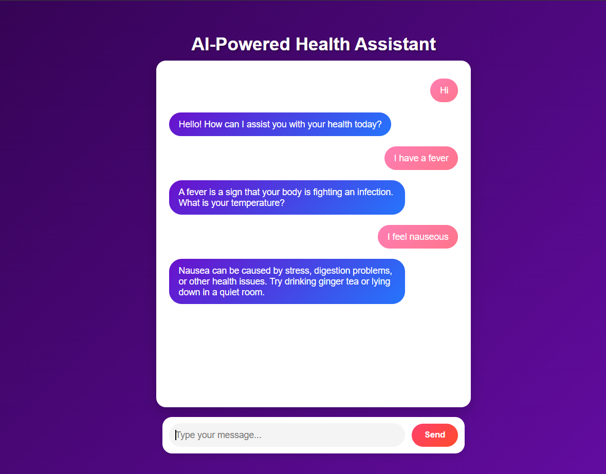
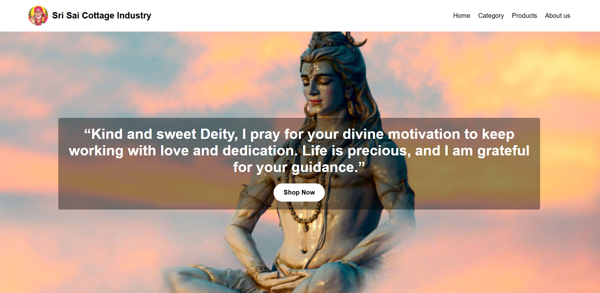

Welcome to My Project Page
Stock Price Comparison


Project Description
Technologies Used:
- Flask – Web framework for handling requests and rendering HTML templates.
- Yahoo Finance (yfinance) – Retrieves historical stock data.
- Pandas & NumPy – Processes and manipulates stock data.
- Matplotlib – Generates data visualization plots.
- Statsmodels (ARIMA) – Performs time-series forecasting.
- Jinja2 (Flask Templates) – Dynamically renders data in HTML.
Uses:
- Compare the closing prices of two selected stocks.
- Predict future stock prices using an ARIMA model.
- Visualize stock trends with plotted graphs.
- Assist investors in analyzing stock performance over a specified date range.
Advantages:
- Real-Time Data Retrieval: Fetches the latest stock prices from Yahoo Finance.
- Predictive Analysis: Uses ARIMA to forecast future stock prices based on historical data.
- User-Friendly Interface: Allows easy input of stock symbols and date ranges.
- Dynamic Visualization: Generates and displays comparative and individual forecast graphs.
- Error Handling: Provides meaningful feedback for invalid stock symbols or incorrect date formats.
Health Chatbot using NLP

Project Description
Technologies Used:
- Flask – Web framework for handling HTTP requests and rendering templates.
- SpaCy – NLP library for processing and understanding user messages.
- Pandas – Handles CSV file reading and manipulation for the health dataset.
- Jinja2 (Flask Templates) – Dynamically renders responses in HTML.
- JSON – Handles chat history and communication between the frontend and backend.
Uses:
- Provides automated responses based on health-related queries.
- Uses NLP to analyze user messages and determine relevant responses.
- Loads and processes a health dataset from a CSV file for chatbot responses.
- Identifies user symptoms and suggests relevant specialists.
- Maintains chat history for context-aware responses.
Advantages:
- Intelligent Response Handling: Uses NLP techniques to generate accurate replies.
- Health Dataset Integration: Retrieves predefined responses from a structured dataset.
- Personalized Recommendations: Suggests medical specialists based on user symptoms.
- Dynamic Learning: Allows the dataset to be expanded for improved responses.
- Interactive and User-Friendly: Engages users with context-aware replies and history tracking.
E-Commerce Website using HTML and CSS

Project Description
Technologies Used:
- HTML – Structure of the website, including product listings, navigation, and user interface.
- CSS – Styling and layout for an attractive and responsive design.
Uses:
- Displays a variety of products with images, descriptions, and prices.
- Provides a user-friendly navigation bar for browsing different product categories.
- Includes a shopping cart section to add or remove products.
- Features a checkout page for order completion.
- Ensures a responsive design for seamless viewing on mobile and desktop.
Advantages:
- Simple and Lightweight: Uses pure HTML and CSS, making it easy to deploy.
- Fast Loading: No external scripts, ensuring quick page load times.
- Responsive Design: Adapts to different screen sizes for better user experience.
- Easy Customization: Can be modified easily to add more features or improve design.
- User-Friendly Interface: Intuitive layout for a smooth shopping experience.